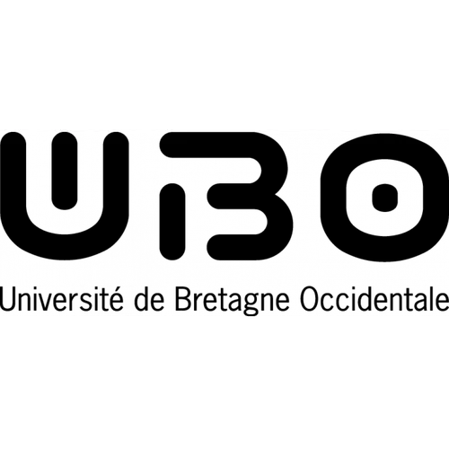
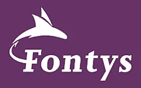
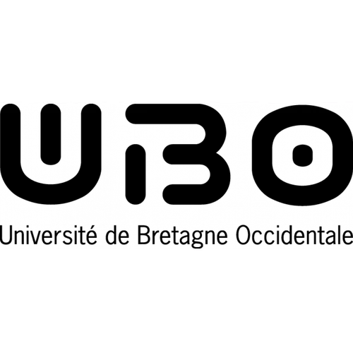
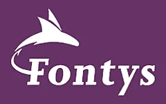

PORTOFOLIO
Resume
- Development of a GUI - Summer 2023 (2 months)
- Wheel-car project - Spring 2023 (2 months)
- Power Load Balancer (in collaboration with Sioux Technologies) - Spring 2023 (3 months)
- Python game in the command line - Spring 2021 (3 months)
- Study about the out-of-body experience - Spring 2021 (2 months)
C++ | CMake | Linux-Windows | VS Code | Robotics knowledge
C | UML | MQTT | UART | ESP32-STM32 | FreeRTOS | PID
C++ | ESP32 | UML | MQTT | I²C | Agile working method | Professional English
Python | Linux Terminal
Critical thinking | Conduction of a study | Research of scientific documentation | Implementation of the scientific method
Education
- 2020 - 2025: Student at ENIB - Ecole Nationale d'Ingénieurs de Brest, Brest (29)
- 2023 - 2025: Student at UBO - Université Bretagne-Ouest, Brest (29)
- February 2023 - June 2023: Student at Fontys - University of Applied Sciences, Eindhoven, Netherlands
- 2017 - 2020: Highschool Student - Lycée Immaculée Conception, Laval (53)
Embedded systems, electronics, computer engineering, mechanical engineering, humanities & social sciences.
Business management, comptability and administration.
Embedded systems, IoT, networking, project management.
Baccalauréat (Good grade).
 



Current (and past) projects
In this section you can have a closer look of the above-mentioned projects, along with some of my personal projects. If you want to see more of my work, you can check out what I am currently learning at school by clicking here. You can also finc my current projects here.
Academic projects
Personal projects
Skills
I have been learning engineering sciences for three years. Here is an overview of the skills I have acquired.
Knowledge
- Programming: C/C++, Python (tensorflow, numpy, scipy), CMake, VHDL, HTML, CSS, JS (beginner)
- Electronics: Digital signal and image processing
- English: proficient
- German: intermediate
Tools
- Programming: Git, VS Code, PlatformIO, Node-Red, Keil u-vision, STM32 IDE
- Electronics: OpenCV, Matlab
Others
- Curious
- Proactive
- Autonomous
Experiences
Along my studies, I have lived different experiences that gave me the opportunity to build more confidence and new skills. I have participated in the 2022 edition of the Ocean Hackathon by curiousity. Altogether with the team we worked on a CO2-tracking application. I studied one semester in the Netherlands at Fontys University of Applied Sciences. You can click here for more details. I worked for the whole summer at a Haption, which is a robotics company specialized in the development of force-feedback devices. You can click here for more details about my mission there.